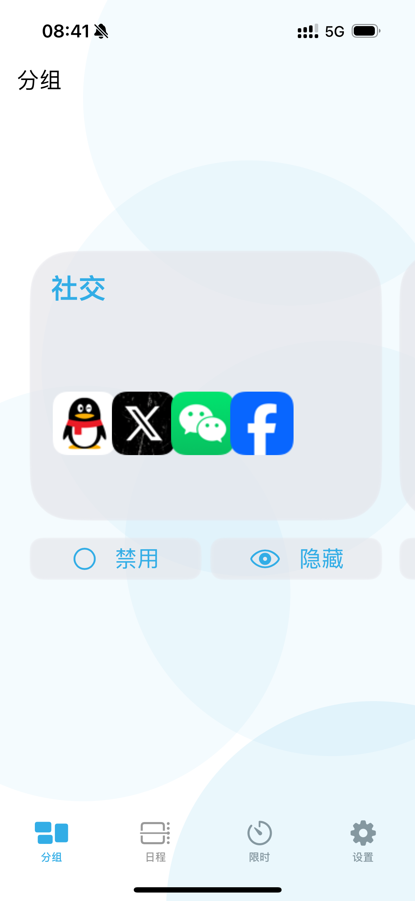
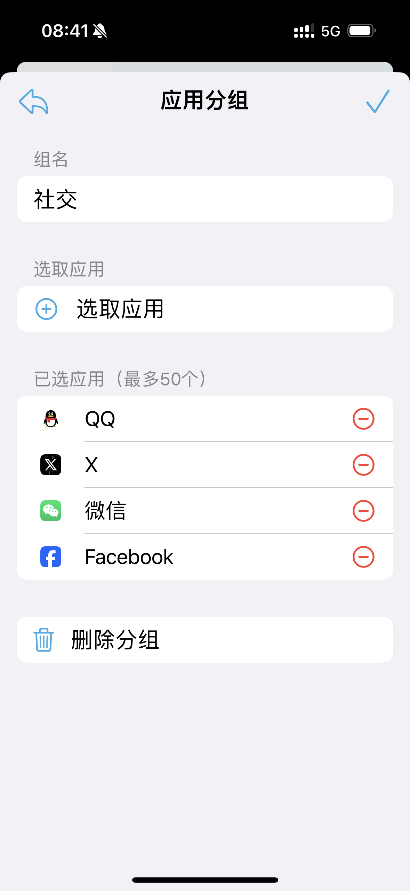
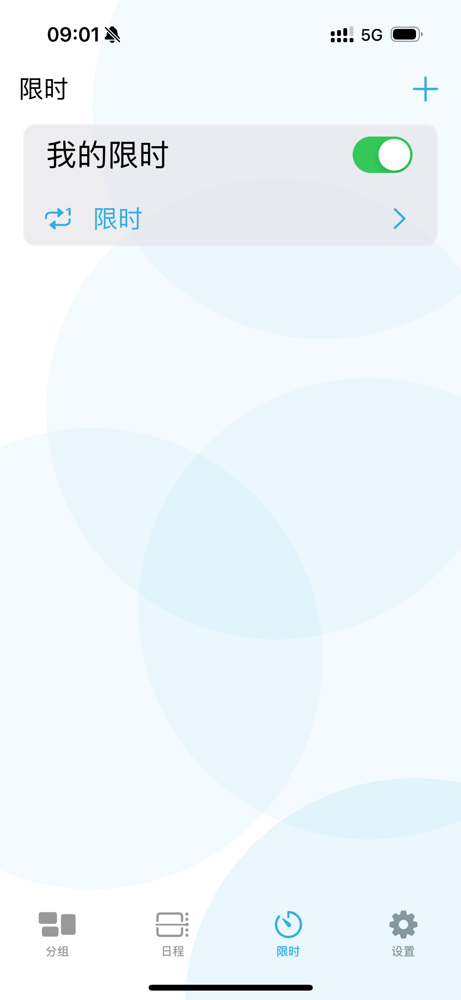
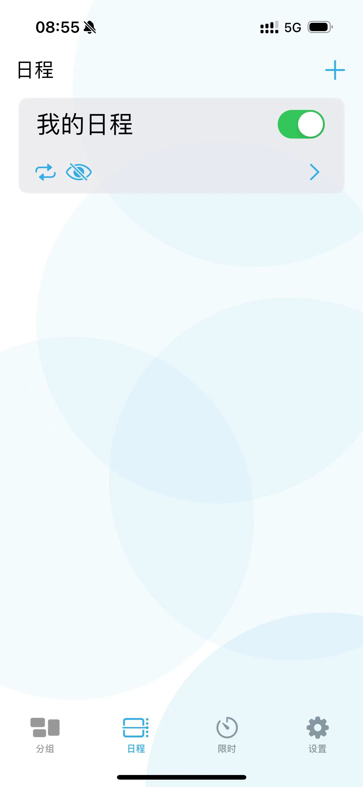

Beta 体验计划
屏幕与专注管理
TimeHabit
TimeHabit 让你对设备保持绝对掌控：按照分组和时间段隐藏、禁用或限制应用，帮助你在工作、学习与休息之间建立清晰边界。
- 智能分组：把常用 App 按场景分类，一键切换状态。
- 多重限制：支持隐藏、禁用与限时模式，灵活应对不同专注需求。
- 自动化流程：设定时间段和触发条件，让专注模式按计划生效。




真实界面截图，自动轮播展示核心功能
为每一个专注瞬间量身打造
多层次应用分组
通过工作、娱乐、自定义等分组同时管理多个 App，快速切换不同生活模式。
时间段自动化
设置工作日、周末或自定义时间段，让指定分组按照计划自动隐藏或恢复。
行为提醒与复盘
限时到达后即时提醒，并通过历史记录回顾一周的专注表现，找出可优化的时段。
安全与隐私保护
离线即可使用主要功能，所有设置本地加密存储，并支持密码或生物识别保护。
适用于这些场景
- 希望在工作时间保持专注，只开放与项目相关的工具。
- 为孩子或长辈设置使用时间，帮助建立健康的屏幕习惯。
- 准备考试或写作，借助阶段性隐藏社交媒体减少干扰。
- 自由职业者需要在工作日结束后快速切换到生活模式。
工作日模式
学习冲刺
家庭共享设备
生活休闲